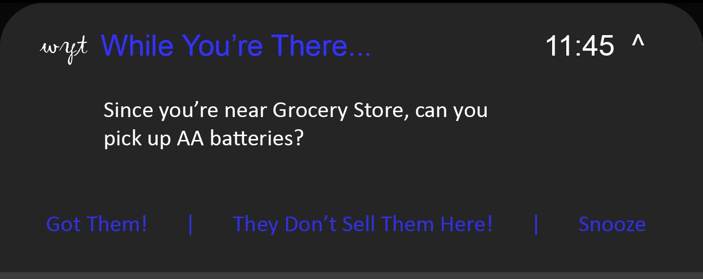

While You're There - A Smartphone App
Ever find yourself thinking, or saying to your partner, "next time I'm at the supermarket, I must remember to pick that up"? If you're like me, you promptly forget about this item you're in need of until you next think of it while sitting at home. While You're There is an application that will aim to alleviate that. When you're sitting at home or at work and think of that slightly left of field item that you need to pick up, simply open up While You're There and enter the item in. When you’re out and about and pass by a location that might sell that item, you received a push notification from the app letting you know you know you wanted to pick up the item and where the system thinks the item might live.
The motivation behind this project is simple - it's an issue a lot of people have. I know certainly for me it's a common occurrence to leave a shopping centre and be five minutes from home when myself or my partner exclaims "Damnit, we should have gotten batteries while we were at the shops!"
While You're There will be a smartphone app which allows the user to enter items they wish to purchase next time they're near a store. The item could be something simple like a loaf of bread, to something a little more niche that they might need to visit a particular or more specialised store for. The app would also allow the user to set up a group, where they and their partner or members of their household can enter items which will update a shared list accessible to anyone.
Once the item has been entered into the app, the data will be returned to a centralised database which will push updates to any other users which are members of the same shopping list.
Running in the background, the app will regularly check the user's location (the preference would be to use the user's low accuracy location for privacy reasons, but testing would need to be done to confirm if this is feasible). If the user was close to a map location that was likely to sell the item the user was looking for, a push notification would display asking the user to pick up the item while they're there.
On an android phone, the push notification might look the picture above, providing the user a call to action to visit the store to purchase the item, while also providing the user the opportunity to indicate that the item wanted is not sold at the suggested location, or to snooze notifications from the app for a period of time. A possible further expansion of the app functionality might use the feedback provided by users that a particular map location does not sell a desired item to lessen the chance of that particular location being given as a suggestion to a different user in future.
Once the user indicates either as a response to the push notification or through the app UI itself that they have purchased the item they needed, this update will be pushed back to the app's central database which will remove the listing from the shopping list on all accounts it is shared to.
The app would also be capable of linking to Siri, Google Assistant and other voice services to create shopping list items.
The app would derive its revenue through the use of small banner ads displayed within the application itself. Additionally, the free version of the app would limit the number of items able to be added to the shopping list, and the number of users to be added to a shared list (these limits would not be needlessly restrictive). If the user wished to have access to unlimited items and list members, they could either pay a small monthly subscription (along the lines of approximately $0.99) or could pay a slightly larger upfront free for lifetime unlocked usage ($4.99 or so). By either subscribing to the app or purchasing it one-off, advertising would also be removed from the app. This price structure is an example only and significant research has not been conducted into how attractive these price points would be or revenue difference between a direct payment and advertising revenue.
In terms of technology, the app would be built as a Xamarin cross-platform application on Android and iOS. Utilising the razor templating engine would allow a more visually appealing and consistent visual approach between platforms, and potentially a browser-based implementation if this is considered later on. The backend database would be hosted as an Azure SQL Server, and backend functionality would be provided through an Azure App Service built in C#. Due to using a SaaS provider for the app's back end, no special hardware would be required to manage this functionality, and communication between the app and the server would primarily be through REST push.
The primary skills relating to this project would be relating to .NET development, with the two main parts of this being Xamarin development for the application itself, and ASP.NET Core for development of Web API running on Azure. Front end design and development skills would also be necessary to build out the user interface of the application and to design things such as AJAX calls within the app and back home to the server to dynamically update data. It seems likely that it would be possible to develop these required skills to be able to develop the app in the near term, and there is ample talent available in the workforce to assist if required.
If the project is successful, it would provide a handy application for users while providing a small revenue stream. Importantly, it would provide a great opportunity for me to develop pretty much all of the necessary and beneficial skills for the ideal job I mentioned earlier - indeed, if I was complete development of this app myself (no small feat in itself), this would largely satisfy most of the requirements of a mid-level .NET developer.